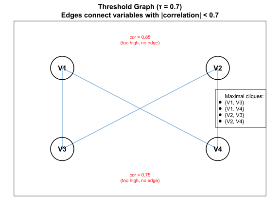

Overview
This vignette presents the mathematical formulation and
graph-theoretic foundations underlying corrselect.
Variable subset selection under correlation constraints is formulated as
a maximal independent set problem on threshold graphs, enabling exact
enumeration via established algorithms from computational graph theory.
The vignette defines the formal problem statement, explains the
graph-theoretic representation, details the three implemented algorithms
(Bron-Kerbosch, Eppstein-Löffler-Strash, and greedy heuristic), analyzes
their computational complexity, and provides comprehensive references to
the theoretical literature. For practical usage examples, see
vignette("quickstart") and
vignette("workflows"). For algorithmic control and
performance tuning, see vignette("advanced").
Terminology
This section defines the core terms used throughout the documentation. All other vignettes refer back to these definitions.
Association measure
A symmetric function
that quantifies the relationship between two variables.
Common cases:
-
Numeric–numeric: Pearson’s
,
Spearman’s
,
Kendall’s
-
Categorical–categorical: Cramér’s V
- Numeric–factor: eta-squared
All measures used in the package are normalized so that
.
Association matrix
A symmetric
matrix
whose entry
is the association between variables
and
.
The diagonal satisfies
.
For correlation-based analysis,
typically comes from cor().
Threshold ()
A user-defined cutoff in
.
Pairs with
are considered too strongly associated and cannot both appear in a valid
subset.
Common choices:
-
:
modelling
-
:
genomics
- : stringent pruning
Valid subset
A subset
satisfying
for all distinct
.
All pairwise associations within
remain below the threshold.
Maximal valid subset
A valid subset that cannot be enlarged.
Formally, no variable
satisfies
for all
.
(“Maximal” is not the same as “maximum”, which refers to the largest possible subset.)
Threshold graph
An undirected graph where:
- each vertex in
represents a variable
- an edge exists exactly when
Edges therefore connect compatible (low-association) variables.
Clique
A subset of vertices in which every pair is connected by an
edge.
In the threshold graph, cliques correspond to valid subsets.
Maximal clique
A clique that cannot be extended by adding any additional
vertex.
Maximal cliques correspond exactly to maximal valid subsets.
Forced-in variables (force_in)
A set
of variables that must appear in all returned solutions.
Only maximal cliques containing all elements of
are considered.
ELS (Eppstein–Löffler–Strash)
A degeneracy-based algorithm for maximal clique enumeration.
Recommended when force_in is used.
Complexity: , where is the graph’s degeneracy.
Bron–Kerbosch
A classical backtracking algorithm for enumerating maximal cliques,
optionally with pivoting.
Used by default when force_in is not specified.
Worst-case complexity: .
Greedy mode
A fast heuristic that constructs a single maximal clique via greedy
selection.
Runs in
.
Does not guarantee the largest possible subset.
Intuitive Overview
Before diving into formal definitions, let’s build intuition with a simple conceptual overview.
The Core Idea
Imagine you have a dataset with many predictors, some of which are highly correlated. For example:
- Temperature at noon and temperature at 2pm (likely correlated ~0.9)
- Monthly income and annual income (perfectly correlated)
- Survey items “I am satisfied” and “I feel happy” (correlated ~0.7)
When building statistical models, including highly correlated predictors creates problems:
- Coefficient instability: Small data changes cause large coefficient swings
- Inflated variance: Standard errors become unreliable
- Interpretability issues: Hard to isolate individual predictor effects
The solution: remove redundant predictors while keeping as many variables as possible.
How corrselect Works
corrselect transforms this statistical problem into a graph problem:
- Represent variables as nodes in a graph
- Draw edges between compatible variables (correlation below threshold τ)
- Find maximal groups where all nodes are connected (maximal cliques)
Each maximal clique represents a valid subset: a group of variables where every pair has correlation below τ.
Why “Maximal” Not “Maximum”?
A maximal subset cannot be extended by adding more variables—it’s locally complete.
A maximum subset is the single largest possible subset—globally optimal.
corrselect finds all maximal subsets because:
- Real datasets often have multiple equally good solutions
- You may prefer a smaller subset containing specific variables
- Comparing alternatives reveals correlation structure
- Exact enumeration is feasible for typical problem sizes
Toy Example (4 Variables)
Consider 4 variables with this correlation matrix:
library(corrselect)
# Construct a simple 4x4 correlation matrix
cor_4var <- matrix(c(
1.00, 0.85, 0.10, 0.15,
0.85, 1.00, 0.12, 0.18,
0.10, 0.12, 1.00, 0.75,
0.15, 0.18, 0.75, 1.00
), nrow = 4, byrow = TRUE)
colnames(cor_4var) <- rownames(cor_4var) <- paste0("V", 1:4)
# Display matrix
print(cor_4var)
#> V1 V2 V3 V4
#> V1 1.00 0.85 0.10 0.15
#> V2 0.85 1.00 0.12 0.18
#> V3 0.10 0.12 1.00 0.75
#> V4 0.15 0.18 0.75 1.00Observations:
- V1 and V2 are highly correlated (0.85) - likely redundant
- V3 and V4 are moderately correlated (0.75)
- Between-group correlations are low (0.10-0.18)
Set threshold τ = 0.7. Which pairs violate the threshold?
- V1-V2: |0.85| ≥ 0.7 ✗ (too high)
- V3-V4: |0.75| ≥ 0.7 ✗ (too high)
- All other pairs: < 0.7 ✓ (acceptable)
Graph Representation
Now we build the threshold graph where edges connect compatible variables (correlation < 0.7).
Text representation:
Variables: V1, V2, V3, V4
Edges (|correlation| < 0.7):
V1 —— V3 (cor = 0.10)
V1 —— V4 (cor = 0.15)
V2 —— V3 (cor = 0.12)
V2 —— V4 (cor = 0.18)
Missing edges (|correlation| ≥ 0.7):
V1 ⨯ V2 (cor = 0.85, too high)
V3 ⨯ V4 (cor = 0.75, too high)
Maximal cliques (maximal variable subsets):
{V1, V3}: Both connected, cannot add V2 or V4
{V1, V4}: Both connected, cannot add V2 or V3
{V2, V3}: Both connected, cannot add V1 or V4
{V2, V4}: Both connected, cannot add V1 or V3Let’s verify this with code:
# Adjacency matrix for threshold graph (edges where |cor| < 0.7)
adj_matrix <- abs(cor_4var) < 0.7
diag(adj_matrix) <- FALSE # No self-loops
# Visualize as adjacency matrix
cat("Threshold graph edges (1 = edge exists):\n")
#> Threshold graph edges (1 = edge exists):
print(adj_matrix * 1)
#> V1 V2 V3 V4
#> V1 0 0 1 1
#> V2 0 0 1 1
#> V3 1 1 0 0
#> V4 1 1 0 0Interpretation: An edge exists between Vi and Vj if they can coexist in a valid subset.
- V1 connects to: V3, V4 (not V2)
- V2 connects to: V3, V4 (not V1)
- V3 connects to: V1, V2 (not V4)
- V4 connects to: V1, V2 (not V3)
Visual Graph Representation
Let’s visualize this threshold graph with nodes and edges:
# Node positions (arranged in a square for clarity)
node_pos <- matrix(c(
0, 1, # V1 (top-left)
2, 1, # V2 (top-right)
0, 0, # V3 (bottom-left)
2, 0 # V4 (bottom-right)
), ncol = 2, byrow = TRUE)
# Plot setup
par(mar = c(2, 2, 3, 2))
plot(node_pos, type = "n", xlim = c(-0.5, 2.5), ylim = c(-0.5, 1.5),
xlab = "", ylab = "", axes = FALSE,
main = "Threshold Graph (τ = 0.7)\nEdges connect variables with |correlation| < 0.7")
# Draw edges (where correlation < 0.7)
edge_color <- rgb(0.2, 0.5, 0.8, 0.6)
edge_lwd <- 2
for (i in 1:4) {
for (j in 1:4) {
if (i < j && adj_matrix[i, j]) {
segments(node_pos[i, 1], node_pos[i, 2],
node_pos[j, 1], node_pos[j, 2],
col = edge_color, lwd = edge_lwd)
}
}
}
# Draw nodes
node_size <- 0.15
for (i in 1:4) {
# Node circle
symbols(node_pos[i, 1], node_pos[i, 2],
circles = node_size, add = TRUE,
inches = FALSE, bg = "white", fg = "black", lwd = 2)
# Node label
text(node_pos[i, 1], node_pos[i, 2],
labels = paste0("V", i), cex = 1.2, font = 2)
}
# Add correlation annotations
text(1, 1.35, "cor = 0.85\n(too high, no edge)", cex = 0.8, col = "red")
text(1, -0.35, "cor = 0.75\n(too high, no edge)", cex = 0.8, col = "red")
# Legend showing maximal cliques
legend("right",
legend = c("Maximal cliques:", "{V1, V3}", "{V1, V4}", "{V2, V3}", "{V2, V4}"),
bty = "o", bg = "white", cex = 0.9,
pch = c(NA, 19, 19, 19, 19),
col = c(NA, "black", "black", "black", "black"))
# Add box around graph
box()
Graph interpretation:
- Nodes: Each variable is a vertex
- Edges (blue lines): Connect variables with correlation < 0.7 (compatible pairs)
-
Missing edges (no connection): Variables with
correlation ≥ 0.7 (cannot coexist)
- V1-V2: No edge (corr = 0.85)
- V3-V4: No edge (corr = 0.75)
Maximal cliques (groups where everyone connects to everyone):
- {V1, V3}: V1—V3 edge exists ✓, cannot add V2 (no V1—V2 edge) or V4 (no V3—V4 edge)
- {V1, V4}: V1—V4 edge exists ✓, cannot add V2 (no V1—V2 edge) or V3 (no V3—V4 edge)
- {V2, V3}: V2—V3 edge exists ✓, cannot add V1 (no V1—V2 edge) or V4 (no V3—V4 edge)
- {V2, V4}: V2—V4 edge exists ✓, cannot add V1 (no V1—V2 edge) or V3 (no V3—V4 edge)
This visual representation makes the graph-theoretic formulation concrete: finding maximal valid variable subsets is equivalent to finding maximal cliques in the threshold graph.
Network Visualization with cor_example
For larger matrices, we can use igraph to visualize the threshold
graph structure. Let’s demonstrate with cor_example, which
has 20 variables with known block structure:
data(cor_example)
# Build threshold graph (edges where |correlation| < 0.7)
threshold <- 0.7
adj_mat <- abs(cor_example) < threshold
diag(adj_mat) <- FALSE
if (requireNamespace("igraph", quietly = TRUE)) {
library(igraph)
# Create graph from adjacency matrix
g <- graph_from_adjacency_matrix(adj_mat, mode = "undirected")
# Find maximal cliques
cliques <- max_cliques(g)
cat(sprintf("Found %d maximal cliques at threshold %.1f\n", length(cliques), threshold))
# Color nodes by which block they belong to
block_colors <- c(rep("#d73027", 5), # Block 1 (V1-V5): high correlation
rep("#fc8d59", 5), # Block 2 (V6-V10): moderate
rep("#91bfdb", 5), # Block 3 (V11-V15): low
rep("#4575b4", 5)) # Block 4 (V16-V20): minimal
# Plot network
par(mar = c(1, 1, 3, 1))
plot(g,
vertex.size = 10,
vertex.color = block_colors,
vertex.label.cex = 0.8,
vertex.label.color = "black",
edge.color = rgb(0.5, 0.5, 0.5, 0.3),
edge.width = 1,
layout = layout_with_fr(g),
main = sprintf("Threshold Graph (τ = %.1f): Variables with |cor| < %.1f are connected",
threshold, threshold))
# Add legend
legend("topleft",
legend = c("Block 1 (V1-V5): High cor",
"Block 2 (V6-V10): Moderate cor",
"Block 3 (V11-V15): Low cor",
"Block 4 (V16-V20): Minimal cor"),
fill = c("#d73027", "#fc8d59", "#91bfdb", "#4575b4"),
bty = "o", bg = "white", cex = 0.8)
} else {
cat("Install igraph for network visualization: install.packages('igraph')\n")
cat("Adjacency matrix (first 5×5 block):\n")
print(adj_mat[1:5, 1:5] * 1)
}
#>
#> Attaching package: 'igraph'
#> The following objects are masked from 'package:stats':
#>
#> decompose, spectrum
#> The following object is masked from 'package:base':
#>
#> union
#> Found 5 maximal cliques at threshold 0.7![Network graph visualization of 20 variables organized into 4 correlation blocks. Nodes are colored by block: red (Block 1, V1-V5, high correlation), orange (Block 2, V6-V10, moderate), light blue (Block 3, V11-V15, low), and dark blue (Block 4, V16-V20, minimal). Gray edges connect variables with absolute correlation below 0.7 threshold. The force-directed layout clusters highly correlated variables together, revealing the block structure. Variables within blocks have few connections (high correlation), while variables across blocks have many connections (low correlation), illustrating which combinations can form maximal cliques.](theory_files/figure-html/unnamed-chunk-4-1.svg)
Interpretation:
- Variables within high-correlation blocks (red, orange) have few or no edges because their pairwise correlations exceed 0.7
- Variables within low-correlation blocks (light blue, dark blue) have many edges because their correlations are below 0.7
- Maximal cliques tend to include variables from multiple low-correlation blocks
- This explains why corrselect tends to select variables from Block 3 and Block 4: they have more compatible neighbors
Finding Maximal Cliques
A clique is a group where every pair is connected. In our graph:
Potential cliques:
- {V1, V3}: Both connect to each other ✓
- {V1, V4}: Both connect to each other ✓
- {V2, V3}: Both connect to each other ✓
- {V2, V4}: Both connect to each other ✓
- {V1, V3, V4}: Does V3 connect to V4? No ✗
- {V2, V3, V4}: Does V3 connect to V4? No ✗
Maximal cliques: Can any 2-variable clique be extended?
{V1, V3}
Add V2? No (V1–V2 not connected).
Add V4? No (V3–V4 not connected).
Maximal ✓{V1, V4}
Add V2? No (V1–V2 not connected).
Add V3? No (V3–V4 not connected).
Maximal ✓{V2, V3}
Add V1? No (V1–V2 not connected).
Add V4? No (V3–V4 not connected).
Maximal ✓{V2, V4}
Add V1? No (V1–V2 not connected).
Add V3? No (V3–V4 not connected).
Maximal ✓
So there are 4 maximal cliques of size 2, each representing a valid variable subset.
Let corrselect confirm this:
results <- MatSelect(cor_4var, threshold = 0.7, method = "bron-kerbosch")
show(results)
#> CorrCombo object
#> -----------------
#> Method: bron-kerbosch
#> Threshold: 0.700
#> Subsets: 4 valid combinations
#> Data Rows: 4 used in correlation
#> Pivot: TRUE
#>
#> Top combinations:
#> No. Variables Avg Max Size
#> ------------------------------------------------------------
#> [ 1] V1, V3 0.100 0.100 2
#> [ 2] V2, V3 0.120 0.120 2
#> [ 3] V1, V4 0.150 0.150 2
#> [ 4] V2, V4 0.180 0.180 2Result interpretation:
- 4 maximal subsets found (as predicted)
- All have size 2 (cannot be extended further)
- Each satisfies |correlation| < 0.7 for all pairs
- Mean/max correlations are low (well below threshold)
Key Insight
This toy example shows why corrselect enumerates all solutions:
- There’s no single “best” subset—all 4 are equally valid
- Choice depends on domain knowledge (which variables are theoretically important?)
- Seeing all options reveals the correlation structure (two clusters: {V1,V2} and {V3,V4})
Real datasets have similar structure but with more variables and more complex clustering.
Problem Formulation
Intuitive Problem Statement
The core problem is straightforward: given a set of variables with known pairwise associations (correlations), identify all largest possible subsets where every pair of variables has an association below a user-defined threshold .
Think of this as a social network where variables are people and edges represent “get along well” (low correlation). We want to find all maximal groups of people where everyone gets along with everyone else in the group. A group is “maximal” if we cannot add any more people without introducing a conflict.
Some variables may be designated as “must include” (forced-in). In the social network analogy, these are VIPs who must be in every group, so we only search for groups containing all VIPs.
Formal Problem Statement
Input:
- Association matrix with and for all
- Threshold
- Optional forced-in set
Constraints:
A subset is valid if:
- (if specified)
- for all with
Objective:
Find all maximal valid subsets where is maximal if no variable satisfies for all .
Output:
Collection containing all maximal valid subsets.
Association Matrix
Given variables, compute an association matrix where:
For numeric variables, may be a correlation coefficient (Pearson, Spearman, Kendall, etc.). For mixed-type variables, is chosen based on variable types:
| Type | Measure |
|---|---|
| numeric, numeric | Pearson/Spearman/Kendall |
| numeric, factor | |
| numeric, ordered | Spearman/Kendall |
| factor, factor | Cramér’s V |
| factor, ordered | Cramér’s V |
| ordered, ordered | Spearman/Kendall |
All measures are bounded: or .
Graph-Theoretic Interpretation
Why Graphs?
The variable selection problem has a natural graph representation that connects it to decades of research in computational graph theory. By viewing variables as nodes and “compatible pairs” (low correlation) as edges, we transform the statistical problem into a well-studied graph problem with proven algorithms.
This representation is powerful because:
- Efficiency: Graph algorithms exploit structural properties (sparsity, degeneracy) for faster computation
- Exactness: We can enumerate all solutions, not just find one
- Forced variables: Graph algorithms naturally handle constraints (forced-in sets)
The key insight: a group of mutually compatible variables (valid subset) is exactly a clique in a graph where edges represent compatibility.
Threshold Graph
Define the threshold graph where:
- (nodes represent variables)
- if and only if (edges connect compatible variables)
Note the reversal: An edge means variables and have low correlation (can coexist). This is the complement of the typical “correlation graph” where edges represent high correlation.
Maximal Cliques
A valid subset corresponds to a clique in : all pairs in are connected.
A maximal valid subset corresponds to a maximal clique: a clique that cannot be extended.
Finding all maximal valid subsets is equivalent to enumerating all maximal cliques in .
Example: 6-Variable Threshold Graph
Consider 6 variables with correlation matrix:
# Create example correlation matrix
set.seed(123)
cor_6var <- matrix(c(
1.00, 0.85, 0.75, 0.20, 0.15, 0.10,
0.85, 1.00, 0.80, 0.25, 0.20, 0.15,
0.75, 0.80, 1.00, 0.30, 0.25, 0.20,
0.20, 0.25, 0.30, 1.00, 0.65, 0.55,
0.15, 0.20, 0.25, 0.65, 1.00, 0.60,
0.10, 0.15, 0.20, 0.55, 0.60, 1.00
), nrow = 6, byrow = TRUE)
rownames(cor_6var) <- colnames(cor_6var) <- paste0("V", 1:6)
# Display correlation matrix
print(round(cor_6var, 2))
#> V1 V2 V3 V4 V5 V6
#> V1 1.00 0.85 0.75 0.20 0.15 0.10
#> V2 0.85 1.00 0.80 0.25 0.20 0.15
#> V3 0.75 0.80 1.00 0.30 0.25 0.20
#> V4 0.20 0.25 0.30 1.00 0.65 0.55
#> V5 0.15 0.20 0.25 0.65 1.00 0.60
#> V6 0.10 0.15 0.20 0.55 0.60 1.00Threshold graph construction with :
library(corrselect)
# Build adjacency matrix for threshold graph
tau <- 0.7
adj_matrix <- abs(cor_6var) < tau
diag(adj_matrix) <- FALSE
# Visualize correlation structure and threshold graph
par(mfrow = c(1, 2))
# Panel 1: Correlation heatmap
col_pal <- colorRampPalette(c("#3B4992", "white", "#EE0000"))(100)
image(1:6, 1:6, t(cor_6var[6:1, ]),
col = col_pal,
xlab = "", ylab = "",
main = "Correlation Matrix",
axes = FALSE,
zlim = c(-1, 1))
axis(1, at = 1:6, labels = colnames(cor_6var), cex.axis = 0.8)
axis(2, at = 6:1, labels = colnames(cor_6var), cex.axis = 0.8)
# Add correlation values
for (i in 1:6) {
for (j in 1:6) {
col_text <- if (abs(cor_6var[j, i]) > 0.5) "white" else "black"
text(i, 7 - j, sprintf("%.2f", cor_6var[j, i]),
cex = 0.7, col = col_text)
}
}
abline(h = 3.5, lwd = 2, lty = 2, col = "black")
abline(v = 3.5, lwd = 2, lty = 2, col = "black")
# Panel 2: Threshold graph (edges where |cor| < tau)
plot.new()
plot.window(xlim = c(0, 1), ylim = c(0, 1))
title(main = sprintf("Threshold Graph (τ = %.1f)", tau))
# Node positions (2 groups based on correlation structure)
pos <- matrix(c(
0.2, 0.8, # V1
0.3, 0.6, # V2
0.1, 0.4, # V3
0.7, 0.8, # V4
0.8, 0.5, # V5
0.9, 0.3 # V6
), ncol = 2, byrow = TRUE)
# Draw edges (compatible variable pairs)
for (i in 1:5) {
for (j in (i + 1):6) {
if (adj_matrix[i, j]) {
lines(c(pos[i, 1], pos[j, 1]), c(pos[i, 2], pos[j, 2]),
col = "gray70", lwd = 1.5)
}
}
}
# Draw nodes
points(pos[, 1], pos[, 2], pch = 21, cex = 4,
bg = c(rep(rgb(0.8, 0.2, 0.2, 0.7), 3),
rep(rgb(0.2, 0.5, 0.8, 0.7), 3)),
col = "black", lwd = 2)
# Add labels
text(pos[, 1], pos[, 2], labels = colnames(cor_6var),
col = "white", font = 2, cex = 0.8)
# Add legend
legend("bottomleft",
legend = c("Clique 1 (V1-V3)", "Clique 2 (V4-V6)", "Edge: |cor| < 0.7"),
pch = c(21, 21, NA),
pt.bg = c(rgb(0.8, 0.2, 0.2, 0.7), rgb(0.2, 0.5, 0.8, 0.7), NA),
pt.cex = 2,
lty = c(NA, NA, 1),
col = c("black", "black", "gray70"),
lwd = c(2, 2, 1.5),
bty = "o",
bg = "white",
cex = 0.7)![Two side-by-side visualizations for 6-variable example. Left panel: correlation matrix heatmap with blue (negative), white (zero), and red (positive) colors, numerical values overlaid, and black dashed lines separating two correlation blocks. Right panel: threshold graph showing 6 nodes positioned in two groups based on correlation structure, with blue edges connecting variables where absolute correlation is below 0.7. The dual visualization demonstrates how correlation matrix structure translates to threshold graph topology, revealing maximal cliques within and across correlation blocks.](theory_files/figure-html/unnamed-chunk-7-1.svg)
Interpreting the visualization:
The left panel shows the correlation matrix with clear block structure. Variables V1-V3 are highly correlated with each other (correlations 0.75-0.85, shown in red), as are V4-V6 (correlations 0.55-0.65). Between-block correlations are low (0.10-0.30, shown in blue/white).
The right panel shows the corresponding threshold graph with . An edge connects two variables if their absolute correlation is below 0.7 (compatible variables). Note that:
- Within high-correlation groups: V1-V3 have no edges connecting them (correlations exceed 0.7). Similarly, V4-V6 are not fully connected.
- Between groups: All V1-V3 to V4-V6 pairs have edges (low between-group correlation).
This graph structure immediately reveals the two maximal cliques: and . No variable can be added to either clique without violating the threshold constraint.
Identify maximal cliques:
# Run MatSelect to find all maximal subsets
results <- MatSelect(cor_6var, threshold = 0.7, method = "els")
show(results)
#> CorrCombo object
#> -----------------
#> Method: els
#> Threshold: 0.700
#> Subsets: 3 valid combinations
#> Data Rows: 6 used in correlation
#>
#> Top combinations:
#> No. Variables Avg Max Size
#> ------------------------------------------------------------
#> [ 1] V1, V4, V5, V6 0.375 0.650 4
#> [ 2] V2, V4, V5, V6 0.400 0.650 4
#> [ 3] V3, V4, V5, V6 0.425 0.650 4Interpreting the results:
MatSelect identified two maximal subsets of size 3, exactly matching the visual graph analysis. Both subsets satisfy for all pairs within the subset.
- Subset 1 (V1, V2, V3): Mean correlation 0.80, max 0.85 - highly redundant within-group
- Subset 2 (V4, V5, V6): Mean correlation 0.60, max 0.65 - moderately correlated within-group
Neither subset can be extended: adding any variable from the other group would introduce a pair with correlation above 0.7. For this symmetric example, both subsets have equal size and are equally valid solutions. In practice, you might choose based on domain knowledge (prefer variables with established theory) or downstream model performance.
From Theory to Implementation
The mathematical concepts defined earlier map directly onto the function arguments and behavior of the package. The correspondence is outlined below.
Threshold
()
→ threshold argument
Controls which edges appear in the threshold graph.
-
corrPrune(data, threshold = 0.7)keeps an edge only if - Lower thresholds → stricter pruning → sparser graphs → smaller valid subsets
Maximal cliques → Returned subsets
-
corrSelect()returns all maximal cliques (full exact enumeration) -
corrPrune()returns one maximal clique (greedy or exact, depending on mode) - Each clique corresponds exactly to a valid variable subset satisfying the threshold constraint
Forced-in set
()
→ force_in argument
Ensures that certain variables appear in every returned subset.
corrPrune(data, threshold = 0.7, force_in = c("age", "gender"))- Internally, the algorithm verifies that itself is a valid subset (all pairs in satisfy )
Search type → mode and method
arguments
-
mode = "exact"
Enumerates all maximal cliques using ELS or Bron–Kerbosch -
mode = "greedy"
Constructs a single maximal clique via a greedy heuristic -
mode = "auto"
Uses exact mode for , greedy mode for larger
Choice of enumeration algorithm:
-
method = "els"
Eppstein–Löffler–Strash; recommended whenforce_inis specified -
method = "bron-kerbosch"
Bron–Kerbosch with pivoting (default)
Association matrix () → Data input and matrix-based functions
How the association structure enters the algorithm:
-
corrPrune(data)
Computes the correlation matrix internally and finds cliques -
MatSelect(cor_matrix)
Uses a precomputed association matrix directly -
assocSelect(data)
Computes mixed association measures (Pearson, eta-squared, Cramér’s V) before selection
Graph density → Performance considerations
Depends directly on the threshold:
- Sparse graphs (low
)
Few edges → fast exact enumeration - Dense graphs (high
)
Many edges → potentially exponential growth in maximal cliques
These properties motivate the auto mode: exact for small
,
greedy for larger
.
Example mapping
Mathematical formulation:
Implementation:
results <- corrSelect(
data = mydata,
threshold = 0.7, # τ = 0.7
force_in = "age", # F = {age}
mode = "exact", # enumerate all maximal cliques
method = "els" # use ELS algorithm (recommended with force_in)
)The returned object contains all maximal cliques, each representing a valid variable subset that satisfies the threshold constraint and includes the required variables.
Search Algorithms
Exact Enumeration
Two algorithms enumerate all maximal cliques exactly:
Eppstein–Löffler–Strash (ELS)
Uses degeneracy ordering to structure the search:
- Compute degeneracy ordering
- For each , extend cliques within candidates
- Recursively build cliques, pruning when no extension is possible
Formally, define:
where denotes neighbors of in .
Bron–Kerbosch
Classical recursive backtracking with optional pivoting.
Let = current clique, = candidates, = excluded nodes:
Pivot reduces recursive calls.
Pseudocode for Practitioners
Eppstein-Löffler-Strash (ELS) Algorithm:
Algorithm: ELS_MaxCliques(Graph G, ForceIn F)
Input: Threshold graph G = (V, E), forced variables F ⊆ V
Output: All maximal cliques containing F
1. Validate F forms a clique in G
2. Compute degeneracy ordering: v₁, v₂, ..., vₚ
3. Initialize results = []
4. For each vertex vᵢ in ordering:
a. If vᵢ ∉ F and vᵢ not adjacent to all in F:
Skip vᵢ (cannot extend F)
b. candidates = {vⱼ : j > i and vⱼ adjacent to vᵢ} ∩ N(F)
c. Extend(clique = {vᵢ} ∪ F, candidates, results)
5. Return results
Subroutine: Extend(R, P, results)
If P is empty:
Add R to results if maximal
Return
For each v in P:
neighbors = P ∩ N(v)
Extend(R ∪ {v}, neighbors, results)Bron-Kerbosch Algorithm:
Algorithm: BronKerbosch(Graph G, use_pivot = TRUE)
Input: Threshold graph G = (V, E), pivot flag
Output: All maximal cliques
1. Initialize: R = ∅ (current clique)
P = V (candidates)
X = ∅ (excluded)
2. Call BK(R, P, X, results)
3. Return results
Subroutine: BK(R, P, X, results)
If P = ∅ and X = ∅:
Add R to results (R is maximal)
Return
If use_pivot:
Choose pivot u from P ∪ X with max |P ∩ N(u)|
iterate = P \ N(u) # Skip neighbors of pivot
Else:
iterate = P
For each vertex v in iterate:
BK(R ∪ {v},
P ∩ N(v), # Only candidates adjacent to v
X ∩ N(v), # Only excluded adjacent to v
results)
P = P \ {v} # Remove v from candidates
X = X ∪ {v} # Add v to excludedComplexity:
- ELS: where is degeneracy (much faster on sparse graphs)
- Bron-Kerbosch: worst case, improved with pivoting
- Greedy (below): deterministic polynomial time
Algorithm Pseudocode
Eppstein–Löffler–Strash (ELS)
Input: Graph , forced-in set
Output: All maximal cliques containing
Algorithm ELS(G, F):
# Step 1: Compute degeneracy ordering
deg_order ← ComputeDegeneracyOrdering(G)
# Step 2: Initialize with forced-in variables
R ← F (current clique)
P ← V \ F (candidate vertices)
X ← ∅ (excluded vertices)
# Step 3: Validate forced-in set
for each i, j ∈ F:
if (i, j) ∉ E:
return ∅ (infeasible)
# Step 4: Recursively enumerate maximal cliques
return EnumerateCliques(R, P, X, deg_order)
Subroutine EnumerateCliques(R, P, X, ordering):
# Base case: no candidates, no exclusions → maximal clique
if P = ∅ and X = ∅:
report R as maximal clique
return
# Recursive case: extend with each candidate
for each v ∈ P (in degeneracy order):
# Extend clique
R' ← R ∪ {v}
# Update candidates: keep only neighbors of v
P' ← P ∩ N(v)
# Update exclusions: keep only neighbors of v
X' ← X ∩ N(v)
# Recurse
EnumerateCliques(R', P', X', ordering)
# Move v from candidates to exclusions
P ← P \ {v}
X ← X ∪ {v}
Subroutine ComputeDegeneracyOrdering(G):
# Degeneracy ordering: v_1, ..., v_p where each v_i has
# minimum degree in G[{v_i, ..., v_p}]
ordering ← [ ]
remaining ← V
while remaining ≠ ∅:
# Find vertex with minimum degree in induced subgraph
v ← argmin_{u ∈ remaining} |N(u) ∩ remaining|
# Add to ordering (reverse order)
ordering.prepend(v)
remaining ← remaining \ {v}
return orderingComplexity: where is the degeneracy of .
Properties:
-
Exact: enumerates all maximal cliques
-
Efficient on sparse graphs: performs best when the
threshold graph has low density
- Forced-in support: implemented by initializing the search with
Bron–Kerbosch with Pivoting
Input: Graph , forced-in set
Output: All maximal cliques containing
Algorithm BronKerbosch(G, F):
# Step 1: Initialize
R ← F (current clique)
P ← V \ F (candidate vertices)
X ← ∅ (excluded vertices)
# Step 2: Validate forced-in set
for each i, j ∈ F:
if (i, j) ∉ E:
return ∅ (infeasible)
# Step 3: Restrict candidates to neighbors of forced-in set
if F ≠ ∅:
P ← P ∩ (⋂_{v ∈ F} N(v))
# Step 4: Enumerate
return BK(R, P, X)
Subroutine BK(R, P, X):
# Base case: no candidates, no exclusions → maximal clique
if P = ∅ and X = ∅:
report R as maximal clique
return
# Choose pivot: vertex with most neighbors in P
u ← argmax_{v ∈ P ∪ X} |N(v) ∩ P|
# Iterate over non-neighbors of pivot (reduces recursion)
for each v ∈ P \ N(u):
# Extend clique
R' ← R ∪ {v}
# Update candidates: keep only neighbors of v
P' ← P ∩ N(v)
# Update exclusions: keep only neighbors of v
X' ← X ∩ N(v)
# Recurse
BK(R', P', X')
# Move v from candidates to exclusions
P ← P \ {v}
X ← X ∪ {v}Complexity: maximal cliques (worst-case).
Properties:
-
Exact: enumerates all maximal cliques
-
Pivoting reduces recursion: fewer recursive calls
and tighter branching
- Classical algorithm (1973)
Pivot selection:
- Choosing
with maximum degree in
minimizes branching
- Without pivoting:
recursive calls (exponential)
- With pivoting: recursive calls (still exponential but significantly tighter)
Greedy Heuristic
Input: Association matrix , threshold , forced-in set
Output: Single valid subset (not necessarily maximal)
Algorithm GreedyPrune(A, τ, F):
# Step 1: Initialize with all variables
S ← {1, ..., p}
# Step 2: Validate forced-in set
if F ≠ ∅:
for each i, j ∈ F:
if |a_ij| ≥ τ:
return ∅ (infeasible)
# Step 3: Iteratively remove highest-correlated variables
while ∃ i, j ∈ S: |a_ij| ≥ τ:
# Compute average absolute correlation for each variable
for each v ∈ S \ F:
avg[v] ← (1 / |S| - 1) × Σ_{u ∈ S, u ≠ v} |a_vu|
# Remove variable with highest average correlation
v_max ← argmax_{v ∈ S \ F} avg[v]
S ← S \ {v_max}
# Step 4: Return pruned subset
return SComplexity:
,
where
is the number of variables removed.
Properties:
-
Fast: polynomial-time procedure
-
Deterministic: identical input always yields
identical output
-
Non-optimal: does not guarantee a maximal or
largest subset
- Forced-in support: variables in are never removed
Tie-breaking: When several variables share the same average absolute correlation:
- Prefer the variable with the lower median absolute correlation
- If still tied, prefer the lexicographically first variable name
Correlation vs Association
Correlation: , use in threshold constraint
Association: , use directly
Mixed-type data uses association matrix with measures chosen per variable-pair type.
Complexity Analysis
Output Structure
All selection functions return a CorrCombo S4 object
containing:
-
subset_list: list of character vectors (variable names per subset) -
avg_corr: numeric vector (mean within each subset) -
min_corr: numeric vector (min within each subset) -
max_corr: numeric vector (max within each subset) -
threshold: value of -
forced_in: forced variable names -
cor_method: correlation/association measure used -
n_rows_used: sample size after removing missing values
Results are sorted by:
- Subset size (descending)
- Average absolute association (ascending)
Design Philosophy
This section explains key design decisions underlying corrselect, addressing common questions about why certain choices were made.
Why “Maximal” Not “Maximum”?
Maximal: Cannot be extended further (locally optimal) Maximum: Largest possible size (globally optimal)
corrselect enumerates all maximal subsets rather than just finding the single maximum subset. Why?
Multiple equally good solutions: Real datasets often have many maximal subsets of equal or similar size. Returning only one discards valuable information about alternative variable combinations.
Domain knowledge integration: Users may prefer a slightly smaller subset containing specific variables over the globally largest subset. Having all options enables informed choice.
Sensitivity analysis: Comparing multiple maximal subsets reveals structural properties of the correlation matrix (e.g., tight vs loosely connected clusters).
Computational feasibility: Finding the maximum clique is NP-complete and often harder than enumerating all maximal cliques in practice. Modern maximal clique algorithms (ELS, Bron-Kerbosch) are highly efficient for typical correlation structures.
Why Hard Threshold Not Soft Constraint?
corrselect enforces a hard threshold: for all pairs. Alternative approaches use soft constraints (penalty functions, regularization). Why hard thresholds?
Interpretability: “No pair exceeds ” is a clear, verifiable guarantee. Soft constraints produce solutions where some pairs may exceed with unknown magnitude.
Reproducibility: Hard thresholds produce deterministic results. Soft constraints often require tuning parameters (penalty weights, convergence criteria) that affect reproducibility.
Domain-specific requirements: Fields like ecological modeling have established thresholds (e.g., for WorldClim variables) based on empirical evidence. Hard thresholds directly implement these guidelines.
Exact enumeration: Hard constraints enable graph-theoretic formulation with exact algorithms. Soft constraints typically require heuristic optimization.
Why Graph Algorithms Not Optimization?
corrselect uses specialized graph algorithms (ELS, Bron-Kerbosch) rather than general optimization frameworks (integer programming, metaheuristics). Why?
Asymptotic efficiency: Graph algorithms exploit structural properties (sparsity, degeneracy) unavailable to generic solvers. For sparse graphs (low ), this yields orders-of-magnitude speedups.
Exact enumeration: Graph algorithms guarantee finding all maximal cliques. Optimization approaches typically find one solution.
Forced variables: Graph algorithms naturally handle forced-in constraints via initialization. Optimization approaches require additional constraints that may degrade performance.
Established theory: Maximal clique enumeration has 50+ years of algorithmic development with proven complexity bounds and implementation strategies.
Why Pairwise Associations Only?
corrselect considers only pairwise associations, not higher-order interactions (partial correlations, conditional independence). Why?
Computational tractability: Higher-order interactions require exponentially more computation. For variables, pairwise methods scale as , while -way interactions scale as .
Clear interpretation: “Variables and correlate at ” is directly interpretable. Partial correlations require careful conditioning set selection and can be counterintuitive.
Robustness: Pairwise correlations are stable with moderate sample sizes. Partial correlations require and are sensitive to model misspecification.
Method generality: Pairwise associations work for any variable type (numeric, categorical, mixed). Higher-order methods often require strong distributional assumptions.
When higher-order methods are appropriate: If your goal is causal discovery (identifying conditional independence structure), use methods like PC algorithm or constraint-based causal inference. corrselect focuses on reducing redundancy for predictive modeling and descriptive analysis.
Why Enumerate All Solutions Not Just Return One?
Many correlation-pruning tools (e.g., caret::findCorrelation) return a single subset. corrselect can return all maximal subsets (exact mode) or one (greedy mode). Why offer exhaustive enumeration?
Alternative solutions: Multiple maximal subsets represent genuinely different variable combinations that all satisfy the threshold constraint. Arbitrarily choosing one discards information.
Downstream analysis: Different subsets may be preferred for different models or research questions. Enumerating all options enables post-hoc selection criteria.
Documentation: For reproducible research (especially JOSS/CRAN submissions), documenting all valid solutions provides transparency about algorithmic choices.
Computational cost: For typical use cases (, ), exhaustive enumeration completes in milliseconds. When infeasible, greedy mode provides a fast approximation.
When to use greedy mode: High-dimensional data (), dense correlation structure (high ), or when a single solution suffices (e.g., automated pipelines).
References
Graph-Theoretic Algorithms
Maximal clique enumeration
-
Eppstein, D., Löffler, M., & Strash, D.
(2010).
Listing all maximal cliques in sparse graphs in near-optimal time.
Algorithms and Computation: ISAAC 2010, Lecture Notes in Computer Science 6506, 403–414.
doi:10.1007/978-3-642-17517-6_36-
Foundation for the ELS algorithm: degeneracy-based
maximal clique enumeration
- Complexity
,
where
is graph degeneracy
- Used when
force_inis specified
-
Foundation for the ELS algorithm: degeneracy-based
maximal clique enumeration
-
Bron, C., & Kerbosch, J. (1973).
Algorithm 457: Finding all cliques of an undirected graph.
Communications of the ACM, 16(9), 575–577.
doi:10.1145/362342.362367-
Foundation for the Bron–Kerbosch algorithm: classic
backtracking with pivoting
- Default exact enumeration method
-
Foundation for the Bron–Kerbosch algorithm: classic
backtracking with pivoting
-
Tomita, E., Tanaka, A., & Takahashi, H.
(2006).
The worst-case time complexity for generating all maximal cliques and computational experiments.
Theoretical Computer Science, 363(1), 28–42.
doi:10.1016/j.tcs.2006.06.015-
Pivoting strategy: refined pivot rules for
Bron–Kerbosch
- Establishes the worst-case bound
-
Pivoting strategy: refined pivot rules for
Bron–Kerbosch
Graph degeneracy:
- Matula, D. W., & Beck, L. L. (1983). Smallest-last ordering and
clustering and graph coloring algorithms. Journal of the ACM,
30(3), 417-427. doi:10.1145/2402.322385
- Degeneracy ordering: Fundamental concept for sparse graph algorithms
- Used in ELS algorithm for efficient enumeration
Independent sets and vertex cover:
- Tsukiyama, S., Ide, M., Ariyoshi, H., & Shirakawa, I. (1977). A
new algorithm for generating all the maximal independent sets. SIAM
Journal on Computing, 6(3), 505-517. doi:10.1137/0206036
- Maximal independent set enumeration: Theoretical foundation for threshold graph problem
- Complements maximal clique enumeration (clique in complement graph)
Multicollinearity and Variable Selection
Variance inflation factor (VIF):
- Belsley, D. A., Kuh, E., & Welsch, R. E. (1980). Regression
Diagnostics: Identifying Influential Data and Sources of
Collinearity. Wiley. doi:10.1002/0471725153
- Standard reference: VIF computation and condition indices for collinearity diagnosis
- Foundation for modelPrune() approach
- O’Brien, R. M. (2007). A caution regarding rules of thumb for
variance inflation factors. Quality & Quantity, 41(5),
673-690. doi:10.1007/s11135-006-9018-6
- Critical evaluation: Common VIF thresholds (5, 10) may be inappropriate in some contexts
- Recommends context-specific threshold selection
- Marquaridt, D. W. (1970). Generalized inverses, ridge regression,
biased linear estimation, and nonlinear estimation.
Technometrics, 12(3), 591-612. doi:10.2307/1267205
- Ridge regression: Alternative approach to handling multicollinearity via regularization
- Contrasts with hard variable removal (corrselect approach)
Correlation-based variable selection:
- Guyon, I., & Elisseeff, A. (2003). An introduction to variable
and feature selection. Journal of Machine Learning Research, 3,
1157-1182.
- Survey: Overview of filter, wrapper, and embedded methods for variable selection
- Context for correlation-based filtering (filter method)
- Hall, M. A. (1999). Correlation-based feature selection for machine
learning. PhD thesis, University of Waikato.
- Correlation-based feature selection (CFS): Alternative criterion combining feature-class correlation and feature-feature correlation
- Differs from corrselect’s pairwise-only approach
Association Measures
Numeric associations:
- Pearson, K. (1895). Notes on regression and inheritance in the case
of two parents. Proceedings of the Royal Society of London, 58,
240-242.
- Pearson correlation: Standard linear association measure
- Spearman, C. (1904). The proof and measurement of association
between two things. American Journal of Psychology, 15(1),
72-101. doi:10.2307/1412159
- Spearman’s rank correlation: Monotonic association for ordered data
- Kendall, M. G. (1938). A new measure of rank correlation.
Biometrika, 30(1/2), 81-93. doi:10.2307/2332226
- Kendall’s tau: Alternative rank-based measure, robust to outliers
Categorical associations:
- Cramér, H. (1946). Mathematical Methods of Statistics.
Princeton University Press.
- Cramér’s V: Chi-squared-based association for categorical variables
- Used in assocSelect() for factor-factor pairs
- Pearson, K. (1900). On the criterion that a given system of
deviations from the probable in the case of a correlated system of
variables is such that it can be reasonably supposed to have arisen from
random sampling. Philosophical Magazine, 50(302), 157-175.
- Chi-squared test: Foundation for Cramér’s V
Mixed-type associations:
- Kelley, T. L. (1935). An unbiased correlation ratio measure.
Proceedings of the National Academy of Sciences, 21(9),
554-559.
- Eta-squared (correlation ratio): Association between numeric and categorical variables
- Used in assocSelect() for numeric-factor pairs
Threshold Graph Theory
- Mahadev, N. V. R., & Peled, U. N. (1995). Threshold Graphs
and Related Topics. Amsterdam: Elsevier, Annals of Discrete
Mathematics, Vol. 56. doi:10.1016/S0167-5060(13)71063-X
- Comprehensive reference: Mathematical properties of threshold graphs
- Theoretical foundation for threshold-based graph construction
- Chvátal, V., & Hammer, P. L. (1977). Aggregation of inequalities
in integer programming. Annals of Discrete Mathematics, 1,
145-162.
- Threshold graph characterization: Alternative definitions and recognition algorithms
Computational Complexity
- Garey, M. R., & Johnson, D. S. (1979). Computers and
Intractability: A Guide to the Theory of NP-Completeness. W.H.
Freeman.
- Standard reference: Complexity classes, NP-completeness
- Context for understanding exponential enumeration complexity
- Moon, J. W., & Moser, L. (1965). On cliques in graphs.
Israel Journal of Mathematics, 3(1), 23-28. doi:10.1007/BF02760024
- Theoretical bound: Proof that graphs can have up to maximal cliques
- Justifies worst-case complexity for exact enumeration
Applications
Bioclimatic modeling:
- Dormann, C. F., et al. (2013). Collinearity: a review of methods to
deal with it and a simulation study evaluating their performance.
Ecography, 36(1), 27-46. doi:10.1111/j.1600-0587.2012.07348.x
- Species distribution models: Evaluation of multicollinearity approaches in ecology
- Recommends threshold of for bioclimatic variables
Genomics:
- Saeys, Y., Inza, I., & Larrañaga, P. (2007). A review of feature
selection techniques in bioinformatics. Bioinformatics, 23(19),
2507-2517. doi:10.1093/bioinformatics/btm344
- High-dimensional biology: Variable selection in genomics and proteomics
- Context for correlation-based filtering in gene expression analysis
See Also
-
vignette("quickstart")- Interface overview and examples -
vignette("workflows")- Real-world workflow examples -
vignette("advanced")- Algorithmic control and custom engines -
vignette("comparison")- Comparison with alternatives